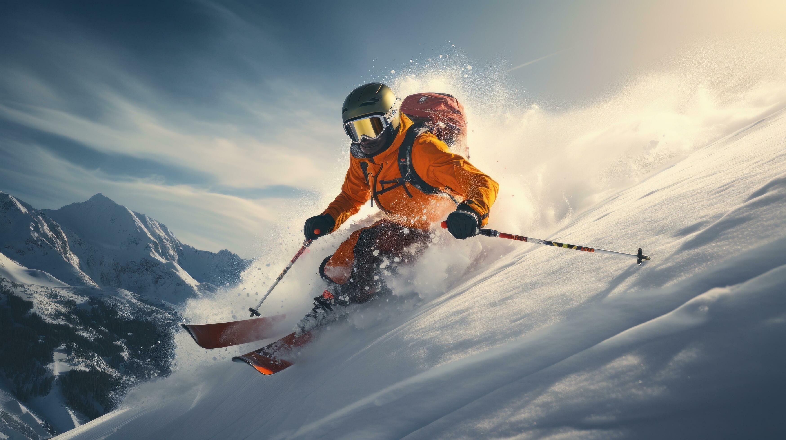

Lyžařský kurz pro prváky - Třebešín
O lyžařském kurzu
Lyžařský kurz pro prváky na střední škole na Třebešíně je skvělou příležitostí, jak spojit sport, zábavu a poznávání nových spolužáků. Během několika dní na horách si studenti osvojí základy lyžování či snowboardingu, zdokonalí svou techniku a zažijí spoustu nezapomenutelných momentů. Kurz podporuje týmového ducha, samostatnost i budování nových přátelství hned na začátku studia.
Denní program
| Čas | Program |
|---|---|
| 7:30 | Snídaně |
| 8:30 | Odjezd na svah |
| 9:00-12:00 | Lyžařský výcvik |
| 12:00 | Oběd |
| 13:00-16:00 | Odpolední lyžování |
| 18:00 | Večeře |
| 19:30 | Večerní program |
Kde se kurz koná
Kurz porobíhá v horském středisku v Krkonoších. Středisko nabízí moderní lanovky, upravené sjezdovky a ideální podmínky pro začátečníky i pokročilé lyžaře.
Fotogalerie



 ¨
¨
Email: lyzak@trebesin.cz
Telefon: +420 123 456 789
Adresa školy: Na Třebešíně 2299/69
Autoři: Bohumil Hera, Maksym Kokish, Hoang Minh Phu An
Vytvořeno:3.3.2026